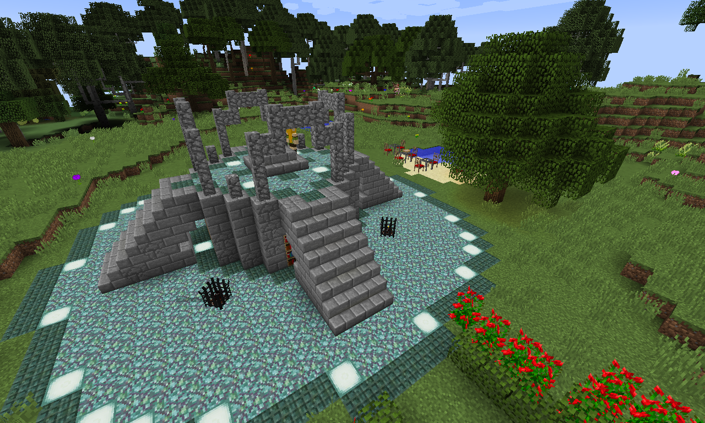
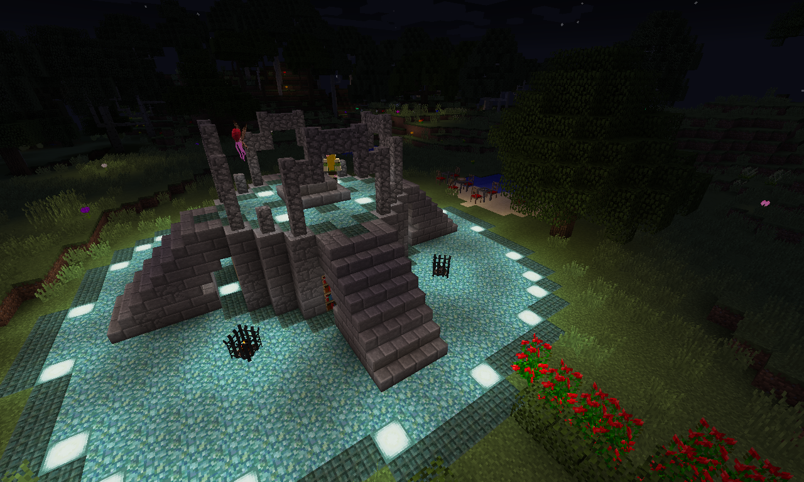
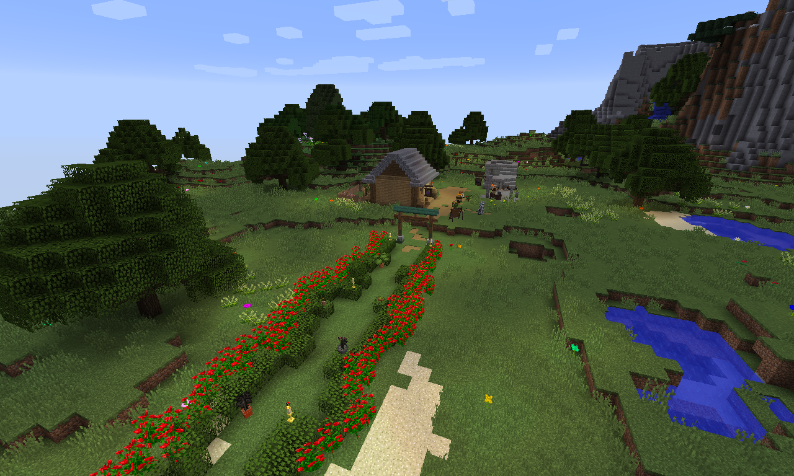
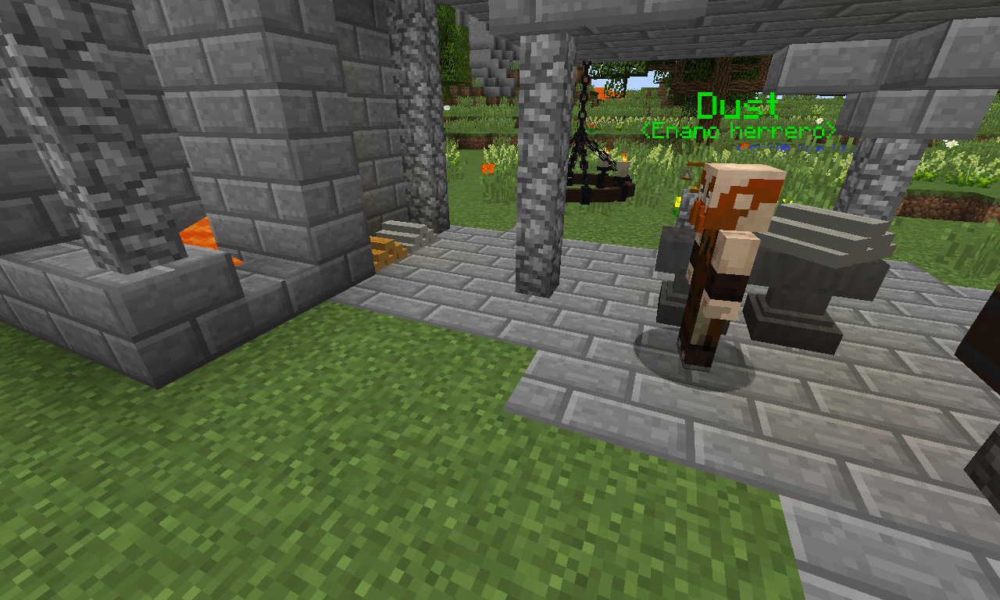

Proyect TombStone es un servidor de Minecraft creado por TMOV. Usa forge en la versión 1.12.2 para añadir varios mods que garanticen una experiencia enriquecedora.
Cuenta con un servidor de Discord (para entrar, dar click en el enlace en la sección posterior de la pestaña), en el cual los usuarios pueden charlar, enviar imágenes, y además se comunican los eventos del mismo.
Prepárese para viajar a un mundo mágico, con elfos, enanos, y bestias dantezcas que amenazarán con acabar con su vida. Sobrepase los obstáculos de este mundo y fortalezcase en el mismo.
Vuelvase el héroe que necesitan, o en el villano que temen, lo que usted desee. Después de todo, el límite es su imaginación.
Diviértete completando misiones, ayudando a personas... o si eres uno de esos, hazlo matando a tus compañeros. Luego no te quejes cuando te quedes sin amigos, que por algo es.
Construye y haz lo que quieras, menos, claro está, usar trampas o modificaciones más allá de las que posee el propio server.


El progreso se relentizó debido al poco tiempo de trabajo, pero el día de hoy se lograron varias cosas.
Se concretó la primer misión del server ("Habla con Dust"), la cual le dará a los jugadores una mochila y una espada para iniciar.
Además se construyó una casa y la herrería en la que trabaja Dust. Junto con esto, se decoró un poco más el spawn
y se añaderon algunos personajes para darle algo de vida al pueblo que recién está comenzando a edificarse.
Foto general del pueblo y su entrada:

Foto de la herrería de Dust:
